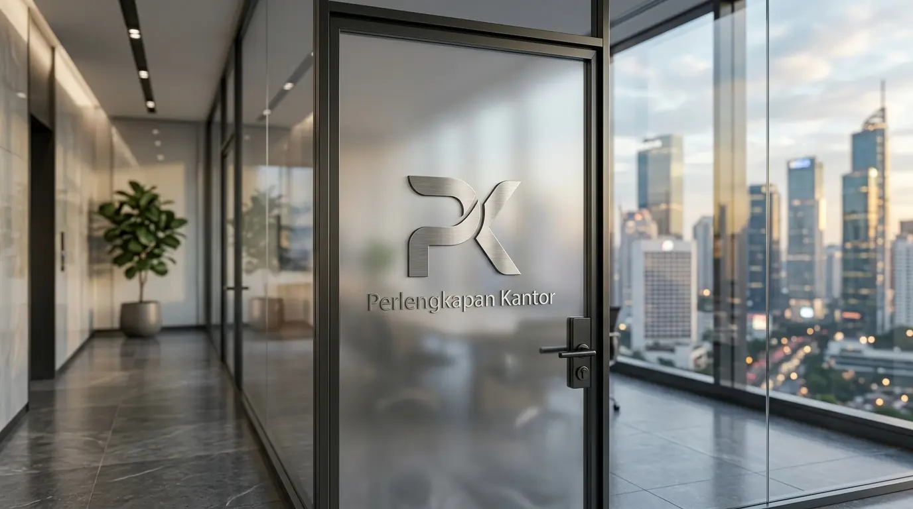

Berapa Estimasi Harga Grosir Ordner F4 Murah di Jakarta Terbaru?
Estimasi harga grosir ordner F4 murah di Jakarta bervariasi antara belasan ribu hingga puluhan ribu rupiah per unit tergantung pada pilihan bahan pelapis luar, ketebalan papan karton, serta merk yang dipilih. Berdasarkan data Jakarta Office Supplies Index 2025-2026, pembelian map ordner dalam kuantitas grosir per karton (isi 15 hingga 25 unit) memberikan efisiensi harga hingga 28% dibandingkan pembelian eceran. Riset Corporate Archival Management 2025 juga menunjukkan bahwa 84% perusahaan di kawasan bisnis Jakarta mengandalkan map ordner F4 berbahan pelapis PVC tahan air untuk mengamankan berkas transaksi keuangan serta dokumen legal penting.
Mengetahui acuan harga grosir pasar Jakarta memudahkan tim pengadaan dalam menghitung alokasi anggaran belanja alat tulis kantor secara presisi. Opsi pembelian grosir sangat disarankan bagi perusahaan yang sedang melakukan penataan arsip tahunan atau pembukaan cabang kantor baru.
Berikut adalah tabel estimasi harga grosir map ordner F4 di Jakarta berdasarkan spesifikasi bahannya:
| Jenis Bahan dan Pelapis | Estimasi Harga Grosir Per Unit | Kapasitas Tampung Dokumen |
|---|---|---|
| Paper / Karton Paper Laminated | Belasan Ribu - Puluhan Ribu | Hingga 400 Lembar |
| PVC Plastic Laminated (Tahan Air) | Puluhan Ribu | Hingga 500 Lembar |
| Heavy Duty PP / PVC Extra Wide | Puluhan Ribu | Hingga 600 Lembar |
- Pesan dalam 1 karton (15-25 unit) untuk harga lebih hemat hingga 28%.
- Pilih bahan PVC tahan air untuk dokumen yang disimpan dalam jangka panjang.
- Minta katalog warna untuk memudahkan sistem kode warna arsip.
Mengapa Map Ordner F4 Sangat Penting untuk Sistem Pengarsipan Kantor?
Map ordner F4 sangat penting untuk sistem pengarsipan kantor karena kapasitas tampung lembar kertasnya yang besar, kemudahan penempelan label indeks pada bagian punggung map, serta perlindungan fisik dokumen yang maksimal dari debu dan kelembapan. Penggunaan map dengan tuas mekanis (lever arch file) mempermudah staf administrasi dalam menyisipkan atau mengambil berkas tanpa perlu merusak susunan dokumen lainnya.
Keunggulan utama penggunaan map ordner F4 meliputi:
- Kapasitas Penyimpanan Besar: Mampu menampung ratusan berkas dalam satu binder sehingga menghemat ruang simpan di lemari arsip.
- Pengelompokan Berkas yang Rapi: Bagian punggung map dilengkapi kantong label untuk menuliskan kategori tahun atau jenis dokumen.
- Proteksi Fisik yang Kokoh: Rangka karton tebal dengan penjepit logam menjaga kertas tetap rapi dan bebas dari lipatan.
- Efisiensi Pencarian Dokumen: Sistem mekanis pengunci berbahan logam mempermudah pembukaan berkas saat proses audit internal.
- Penggunaan map ordner F4 dapat menghemat ruang penyimpanan hingga 40% dibandingkan map biasa.
- Map berbahan PVC tahan air mampu melindungi dokumen dari kerusakan akibat kelembaban.
Faktor Apa Saja yang Memengaruhi Kualitas dan Harga Map Ordner F4?
Faktor yang memengaruhi kualitas dan harga map ordner F4 meliputi ketebalan papan karton (greyboard), jenis lapisan luar (PVC atau kertas laminate), kualitas engsel logam mekanis, serta keberadaan pelindung sudut logam (ring / corner protector) di bagian bawah. Map yang dilengkapi pelindung siku logam bawah memiliki ketahanan gesekan yang lebih tinggi saat ditarik dari rak arsip.
Selain itu, kepresisian mekanisme pengunci tuas besi menentukan apakah map mudah macet atau tetap lancar setelah digunakan berulang kali. Oleh karena itu, memesan pasokan map ordner dari penyedia Perlengkapan Kantor tepercaya menjamin standar kualitas barang yang teruji untuk kebutuhan jangka panjang.
- ✅ Ketebalan greyboard minimal 2,5 mm agar tidak mudah melengkung.
- ✅ Lapisan PVC tahan air untuk perlindungan ekstra.
- ✅ Engsel baja anti karat untuk ketahanan mekanis.
- ✅ Pelindung sudut logam bawah agar tahan gesekan.
Bagaimana Cara Menata Sistem Kearsipan Menggunakan Map Ordner F4?

Map ordner F4 lever arch file dengan mekanisme pengunci baja yang kokoh dan tahan lama.
Cara menata sistem kearsipan menggunakan map ordner F4 adalah dengan mengelompokkan dokumen berdasarkan warna sampul map, memberikan penamaan label yang konsisten pada punggung binder, serta menyusunnya secara kronologis di rak penyimpanan. Penggunaan sistem kode warna (color-coding) mempercepat proses pencarian dokumen oleh tim administrasi dari berbagai divisi.
Pastikan kertas dokumen telah dilubangi dengan rapi menggunakan perforator standar sebelum dimasukkan ke dalam mekanisme tuas pengunci. Konsultasikan kebutuhan media kearsipan perusahaan Anda bersama distributor Perlengkapan Kantor untuk mendapatkan kombinasi warna dan spesifikasi map yang paling sesuai.
Untuk menjaga keamanan dokumen penting serta kerapian ruang administrasi Anda, hubungi penyedia Perlengkapan Kantor kami sekarang dan dapatkan harga grosir ordner F4 Jakarta terbaik dengan jaminan kualitas stok original.
Apa Saja Kesalahan dalam Membeli Map Ordner F4?
Kesalahan dalam membeli map ordner F4 mencakup memilih map dengan kualitas karton yang terlalu tipis sehingga mudah melengkung, mengabaikan ketahanan engsel tuas pengunci, serta tergiur harga terlalu murah tanpa memperhatikan lapisan tahan air. Map berbahan kertas biasa tanpa laminasi PVC sangat rentan rusak jika ditempatkan di area dengan kelembapan udara tinggi.
Di samping itu, tidak memperhitungkan ukuran kertas yang digunakan sering kali membuat dokumen mencuat keluar dari batas map. Membeli pasokan melalui distributor resmi Perlengkapan Kantor memastikan Anda memperoleh ukuran F4 yang presisi dan tahan lama.
- ❌ Membeli map dengan greyboard tipis di bawah 2 mm.
- ❌ Tidak memperhatikan lapisan luar — pilih PVC untuk tahan air.
- ❌ Mengabaikan kualitas engsel logam — pastikan berbahan baja.
- ❌ Tidak memeriksa ukuran — pastikan F4 agar kertas tidak mencuat.
Pertanyaan Populer Seputar Harga Grosir Ordner F4 Jakarta
Kesimpulan Praktis
Memanfaatkan penawaran harga grosir ordner F4 Jakarta merupakan solusi tepat untuk menekan biaya pengadaan sarana kearsipan kantor tanpa mengorbankan kualitas perlindungan dokumen. Melalui dukungan pasokan map berstandar tinggi dari Perlengkapan Kantor, sistem manajemen administrasi perusahaan Anda akan menjadi lebih teratur dan efisien.

Penulis: Ardhana Prasasta
Spesialis konten & konsultan furnitur tata ruang kantor di Perlengkapan Kantor. Berpengalaman dalam memberikan panduan solusi ergonomis, efisiensi ruang kerja, dan pengadaan perlengkapan kantor korporat.